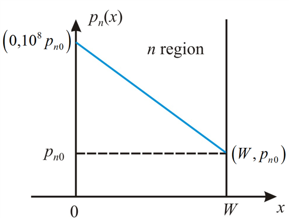

Step 1:
Refer to Figure P3.10 in the textbook for the excess-hole concentration profile.
The modified diagram is shown in Figure 1.

Figure 1: excess-hole concentration profile in steady state
Step 2:
In the case of an n-type Silicon, the carrier concentration levels, where is the donor doping concentration, the number of electrons approximately equal to .
The free electron concentration is approximately equal to the donors doping concentration. The electron concentration is determined by the doping concentration. The electron concentration is not determined by the temperature. Therefore,
Under thermal equilibrium, the equation for the mass action law for the semiconductors is,

Since
The concentration of holes is obtained by the relation, , where is the carrier concentration of an intrinsic silicon.
Step 3:
Substitute for and for  to find the concentration of holes.
to find the concentration of holes.
Step 4:
Express width of the region in centimeters for simplicity.
Calculate the slope of the concentration profile between points and .
Neglect from the expression since .
Step 5:
Write the expression for diffusion current density.
Here,
The charge of the electron is .
Hole diffusion constant is  .
.
Note:
The value of hole diffusion constant, is around. So, the provided value in the question is the value of  but by mistake it was printed as .
but by mistake it was printed as .
Substitute for  , for
, for  , and
, and  for .
for .
Therefore, the current density in the x-direction is, .